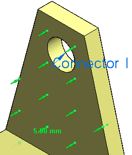

Assembly connector handles, labels, and symbols
Using assembly connector handles and labels
Each assembly connector is represented in the graphics window by two types of labels. One is an edit definition handle that you can use to modify the connection. The other is an optional value label, which you can turn on and off.
-
The edit definition handle looks like an annotation: it displays the assembly connector name and is attached to the entity by a leader line. You can click the edit definition handle to edit the connection itself.

Note:You can use the options on the PMI tab→PMI Text Display group to change the text size of an edit definition handle to make it easier to read.
To learn more, see: Change PMI text size.
-
You can use the Value Label button
 on the Assembly Connector command bar to display a label that identifies the connector type, distance value,
and units.
on the Assembly Connector command bar to display a label that identifies the connector type, distance value,
and units.
Connector symbol and label size
You can change the size and spacing of assembly connector symbols using the Graphic Symbol Size dialog box. You can open this dialog box using the Graphic Symbol Size button  on the Assembly Connector command bar.
on the Assembly Connector command bar.
To learn how: Modify symbol size and spacing.
Connector symbol color
The default colors of assembly connector symbols are set on the Simulation page (Solid Edge Options dialog box).
Color button(s)  on the Assembly Connector command bar show the color currently assigned to a selected connector symbol. You
can change the color locally in the Color dialog box. This color palette changes the color for assembly connector symbols and
for value labels in the current document.
on the Assembly Connector command bar show the color currently assigned to a selected connector symbol. You
can change the color locally in the Color dialog box. This color palette changes the color for assembly connector symbols and
for value labels in the current document.
To learn how, see Modify symbol color.
How do I
Create connectors based on assembly relationshipsCreate assembly connectors using the Auto command
Create manual connections between faces or surfaces
Replace target and source connection regions
Change connector region direction
Change PMI text size
Learn more
Assembly connectorsTarget and source connector regions
Glue and no penetration contact connectors
Thermal connectors
Look up more details
Auto command barAssembly Connector command bar
Assembly Connector Properties dialog box